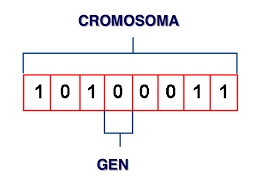

Representación del cromosoma El algoritmo más simple representa cada cromosoma como una cadena de bits. Normalmente, los parámetros numéricos pueden ser representados por números enteros, aunque es posible usar representaciones de coma flotante.
Cuando se utilizan representaciones de números de bits de números enteros, a menudo se emplea la codificación Gray.
De esta manera, pequeños cambios en el número entero pueden ser fácilmente afectados por mutaciones o crossovers.
